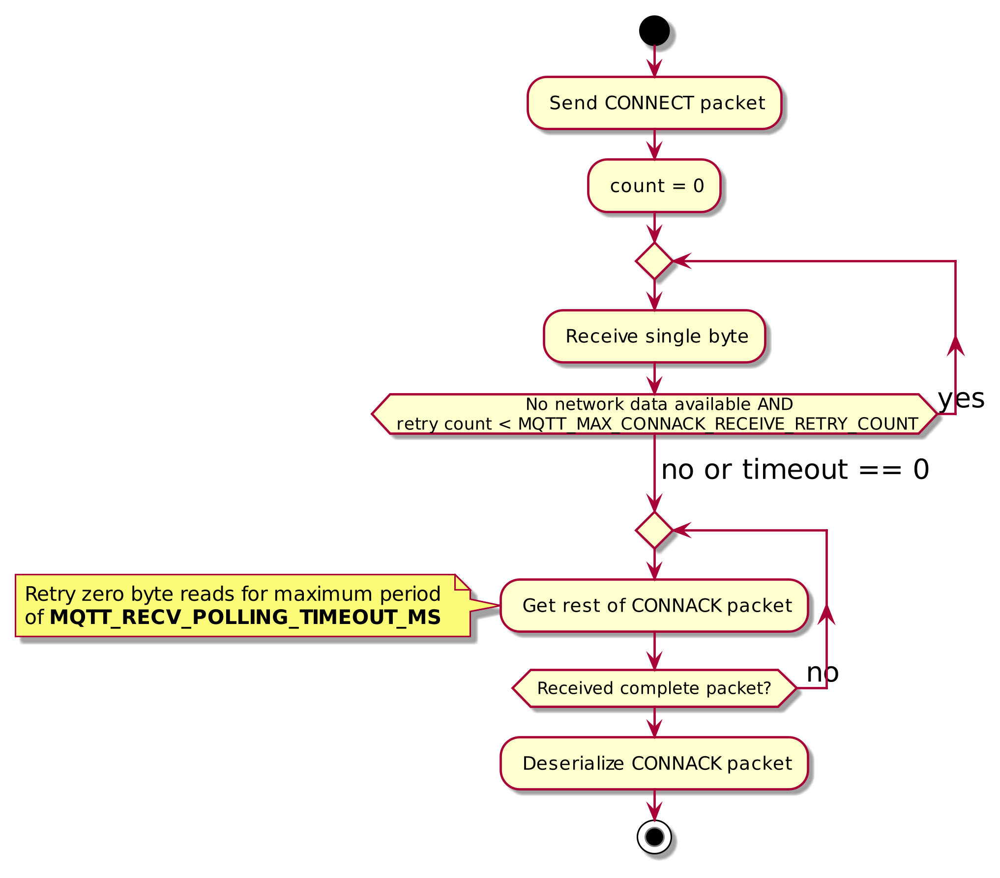
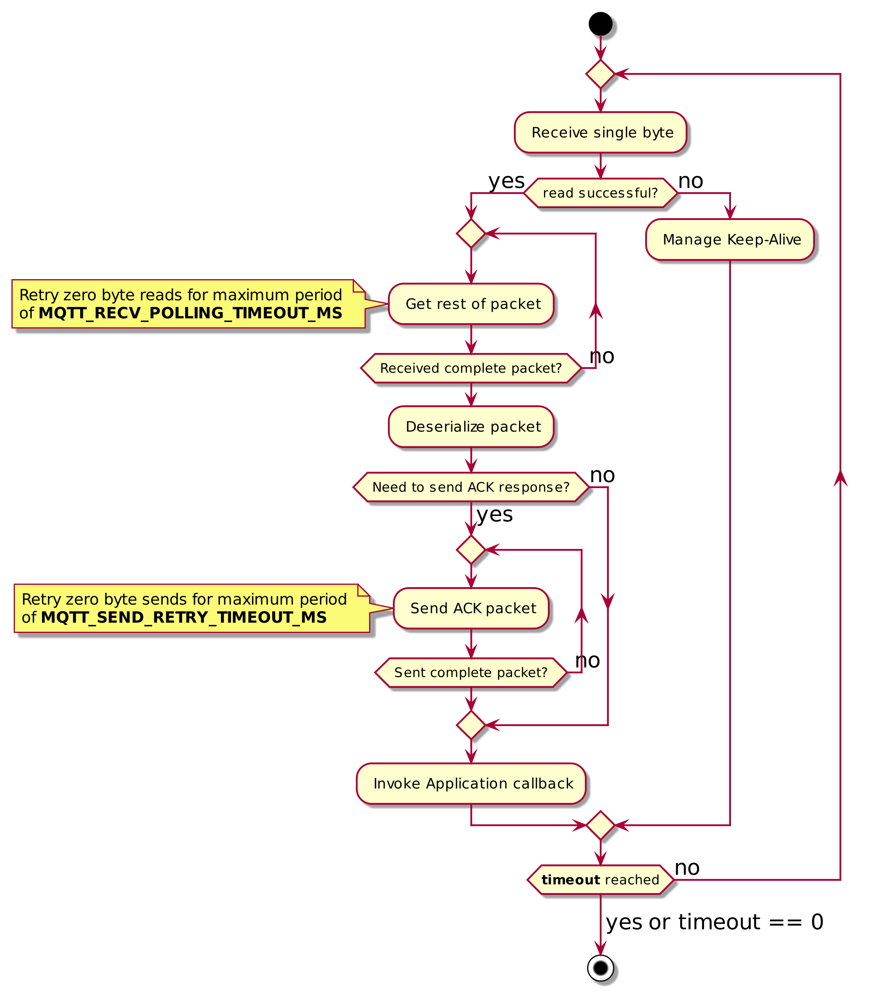
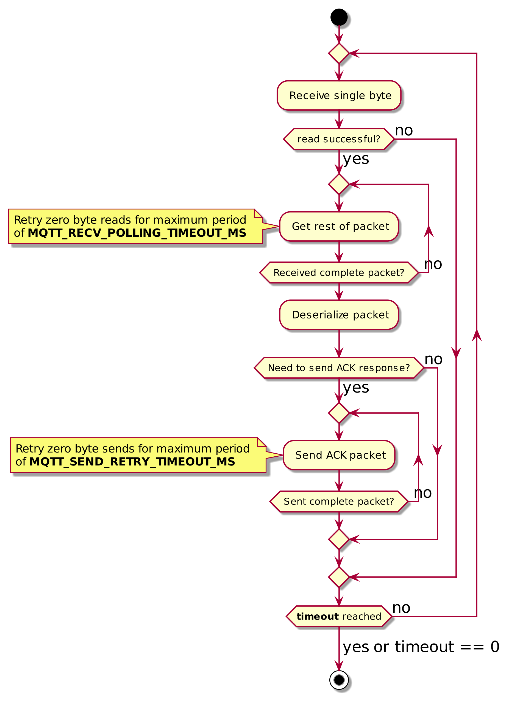

- Generated by
 1.16.1
1.16.1
Architecture of the MQTT library.
This MQTT client library provides an implementation of the MQTT 5.0 specification. It is optimized for resource constrained devices and does not allocate any memory.
The MQTT library relies on interfaces to dissociate itself from platform specific functionality, such as the transport layer or maintaining time. Interfaces used by MQTT are simply function pointers with expectations of behavior.
The MQTT library expects the application to provide implementations for the following interfaces:
| Function Pointer | Use |
| TransportRecv_t | Receiving data from an established network connection. |
| TransportSend_t | Sending data over an established network connection. |
| MQTTGetCurrentTimeFunc_t | Obtaining timestamps for complying with user-specified timeouts and the MQTT keep-alive mechanism. |
| MQTTEventCallback_t | Returning packets received from the network to the user application after deserialization. |
Apart from these, users can optionally define the following callbacks if they wish to use library's mechanism to resend unacknowledged publish packets on a persistent session reconnection.
| Function Pointer | Use |
| MQTTStorePacketForRetransmit | Storing an outgoing publish packet. |
| MQTTRetrievePacketForRetransmit | Retreiving the stored publish packet for retransmission. |
| MQTTClearPacketForRetransmit | Removing the stored copy of a publish packet |
The managed MQTT API in core_mqtt.h uses a set of serialization and deserialization functions declared in core_mqtt_serializer.h. If a user does not want to use the functionality provided by the managed API, these low-level functions can be used directly:
The MQTT 5.0 protocol allows for a client and server to maintain persistent sessions, which can be resumed after a reconnect. The elements of a session stored by this client library consist of the states of incomplete publishes with Quality of Service levels of 1 (at least once), or 2 (exactly once). These states are stored in the pointers pointed to by MQTTContext_t::outgoingPublishRecords and MQTTContext_t::incomingPublishRecords; This library does not store any subscription information, nor any information for QoS 0 publishes.
When resuming a persistent session, the client library will resend PUBRELs for all PUBRECs that had been received for incomplete outgoing QoS 2 publishes. If the optional retransmission callbacks are defined then the library will also resend any unacknowledged QoS>0 publishes. If the broker does not resume the session, then all state information in the client will be reset.
MQTT Packets are received from the network with calls to MQTT_ProcessLoop or MQTT_ReceiveLoop. These functions are mostly identical, with the exception of keep-alive; the former sends ping requests and processes ping responses to ensure the MQTT session does not remain idle for more than the keep-alive interval, while the latter does not. Since calls to MQTT_Publish, MQTT_Subscribe, and MQTT_Unsubscribe only send packets and do not wait for acknowledgments, a call to MQTT_ProcessLoop or MQTT_ReceiveLoop must follow in order to receive any expected acknowledgment. The exception is MQTT_Connect; since a MQTT session cannot be considered established until the server acknowledges a CONNECT packet with a CONNACK, the function waits until the CONNACK is received.
MQTT_Connect accepts a timeout parameter for packet reception. If this value is set to 0, then instead of a time-based loop, it will attempt to call the transport receive function up to a maximum number of retries, which is defined by MQTT_MAX_CONNACK_RECEIVE_RETRY_COUNT.
For MQTT_ProcessLoop and MQTT_ReceiveLoop, the timeout functionality is handled by the user application. It is up to the user to define the number of times these functions will be called, provided that there are no network errors. A single call to the function consists of an attempt to receive all available bytes from the network. If the read was successful, attempt(s) to receive the rest of the packet (with retry attempts governed by MQTT_RECV_POLLING_TIMEOUT_MS) are made. This is followed by the deserialization of the received packet. After this a the application callback is invoked, followed by sending acknowledgement response, if needed (with retry attempts governed by MQTT_SEND_TIMEOUT_MS). If the first read did not succeed, then instead the library checks if a ping request needs to be sent (only for the process loop).
See the below diagrams for a representation of the above flows:
| MQTT Connect Diagram | MQTT ProcessLoop Diagram | MQTT ReceiveLoop Diagram |
|---|---|---|
 |  |  |
The MQTT standard specifies a keep-alive mechanism to detect half-open or otherwise unusable network connections. An MQTT client will send periodic ping requests (PINGREQ) to the server if the connection is idle. The MQTT server must respond to ping requests with a ping response (PINGRESP).
In this library, MQTT_ProcessLoop handles sending of PINGREQs and processing corresponding PINGRESPs to comply with the keep-alive interval. The value of the keep alive interval is the one set in MQTTContext_t::keepAliveIntervalSec unless the server had sent a Server Keep Alive property in the CONNACK packet, in which case the Server Keep Alive value will be used.
The standard does not specify the time duration within which the server has to respond to a ping request, noting only a "reasonable amount of time". If the response to a ping request is not received within MQTT_PINGRESP_TIMEOUT_MS, this library assumes that the connection is dead.
If MQTT_ReceiveLoop is used instead of MQTT_ProcessLoop, then no ping requests are sent. The application must ensure the connection does not remain idle for more than the keep-alive interval by calling MQTT_Ping to send ping requests. The timestamp in MQTTContext_t::lastPacketTxTime indicates when a packet was last sent by the library.
Sending any ping request sets the MQTTContext_t::waitingForPingResp flag. This flag is cleared by MQTT_ProcessLoop when a ping response is received. If MQTT_ReceiveLoop is used instead, then this flag must be cleared manually by the application's callback.